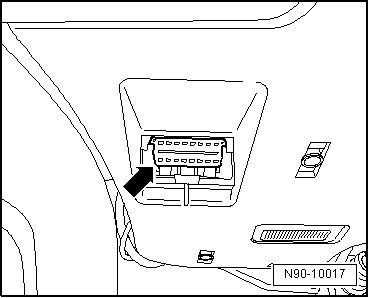

Data Link Connector: Testing and Inspection
Vehicle Tester, Connecting
• Follow the current operating instructions for the Vehicle Diagnosis, Testing And Information System, which can be displayed by selecting the "Administration" and "operator's handbook " buttons.
Special tools, testers and auxiliary items required
• Vehicle Tester
• Diagnostic Cable (VAS 5051/6A) (5 m)
• Diagnostic Cable (VAS 5051/5A) (3 m)
• For the diagnostic, only the diagnostic cables listed above are to be used since only these are equipped with CAN wires and permit a CAN diagnostic or CAN communication.
Connect the Vehicle Tester:
- Apply the parking brake.
- In vehicles with automatic transmissions, move the selector lever to the "P" or "N" position.
- In vehicles with manual transmissions, move the shift lever to the neutral position.
- With the ignition switched off, connect the Vehicle Tester with the Diagnostic Cable (VAS 5051/6A) to the data link connector in the vehicle - arrow -.

- Switch on ignition.
- Turn off all electrical consumers.
• /The connection of all other and the following diagnostic operation system or vehicle diagnosis and service system occurs in the previously described sequence.